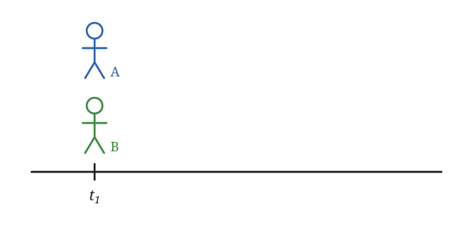
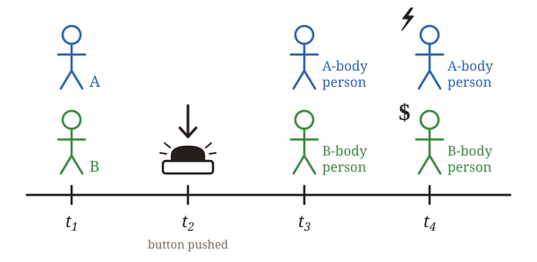
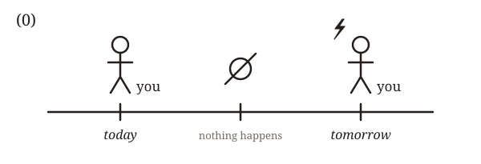
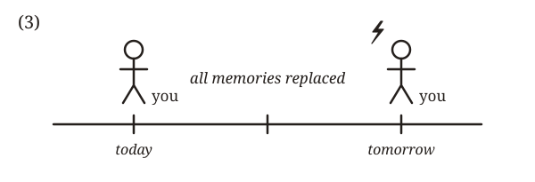
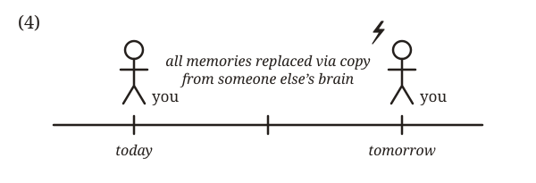
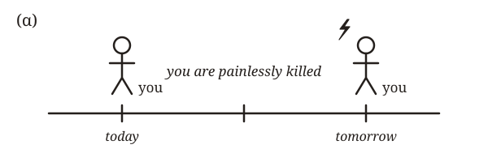
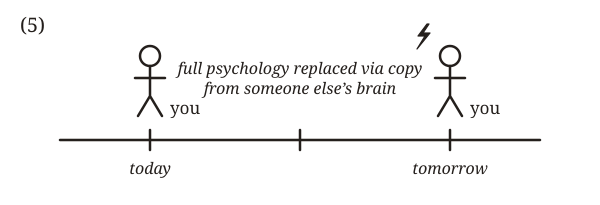
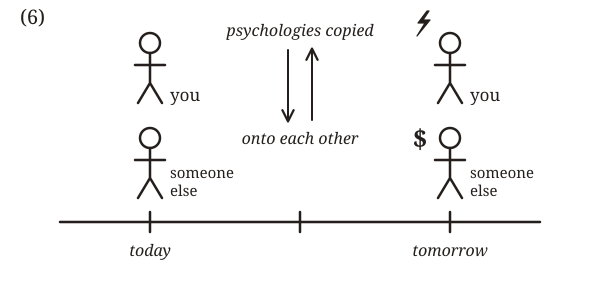

Personal Identity - Williams
PHIL-1 Lecture notes
1. Can we switch bodies?
Williams presents a scenario which many would be tempted to describe as a scenrio in which two individuals switch bodies.
The scenario is as follows:
A is Aaron from Oakland. Fan of the Warriors, runs around Lake Merritt, etc.
B is Bill from Boston. Fan of the Celtics, runs around the Charles River, etc.

At the push of a button, at t2, each has all information extracted from his brain, and then put into the other’s brain.

So, at t3, we have two individuals: the A-body person, and the B-body person.
The B-body person answers to `Aaron’, expresses Warriors fandom, seems to remember going for runs around Lake Merritt, etc.
The A-body person answers to `Bill’, etc.
This seems like a situation where Aaron and Bill have switched bodies (such situations appear in fiction).
What do you think?
What does the Psychological Criterion imply here?
That B-body person = A, since B-body person is uniquely psychologically continuous with A.
That A-body person = B, since A-body person is uniquely psychologically continuous with B.
So the Psychological Criterion agrees with the common, tempting take on this scenario.
Let’s imagine that after this experiement is performed, the A-body person is tortured, and the B-body person is given $100k.

On the view that Aaron and Bill have switched bodies, it is Bill who is tortured, and Aaron who receives the money.
But is this really the correct way to view the situation?
Williams puts forward an argument for saying that the answer is no.
He puts forward an argument for saying that, in this scenario, it is actually Aaron who is tortured and Bill who gets the money.
What’s the argument?
2. Williams’s argument against
Williams’s argument centers on a series of cases that he describes in the long paragraph that starts, “Let’s now consider something apparently different...”
So let’s read through that paragraph together.
2.1 The guard cases
Williams starts:
Someone in whose power I am tells me that I am going to be tortured tomorrow.
We can think of this as case 0. In this case, the person in whose power you are---the guard---simply says you will be tortured tomorrow. He doesn’t say anything about something happening to you first, before you are tortured. In other cases he will.
So, in this case, this represents what the guard says will be happening to you.

Williams goes on:
I am frightened, and look forward to tomorrow in great apprehension.
It makes sense, in this case, to be afraid of feeling pain tomorrow.
Williams goes on:
He adds that when the time comes, I shall not remember being told that this was going to happen to me, since shortly before the torture something else will be done to me which will make me forget the announcement.
We can think of this as case 1. In this case, this is what the guard says will happen to you:

Williams continues:
This certainly will not cheer me up, since I know perfectly well that I can forget things, and that there is such a thing as indeed being tortured unexpectedly because I had forgotten or been made to forget a prediction of the torture: that will still be a torture which, so long as I do know about the prediction, I look forward to in fear.
Pay particular attention to the last thing he says. Knowing that I will later forget what I am now being told does not in any way reduce the fear that I have now of being tortured tomorrow.
Once I have been made to forget, I of course won’t be afraid of being tortured, because I won’t know that it’s happening.
But right now, before I’ve been made to forget, I’m still afraid. And it makes sense for me to be afraid.
Williams continues:
He then adds that my forgetting the announcement will be only part of a larger process: when the moment of torture comes, I shall not remember any of the things I am now in a position to remember.
We can think of this as case 2. In this case, this is what the guard says will happen to you.

Williams comments:
This does not cheer me up, either, since I can readily conceive of being involved in an accident, for instance, as a result of which I wake up in a completely amnesiac state and also in great pain; that could certainly happen to me, I should not like it to happen to me, nor to know that it was going to happen to me.
So in this case it still makes sense to be afraid, right now, of feeling pain tomorrow.
Williams goes on:
He now further adds that at the moment of torture I shall not only not remember the things I am now in a position to remember, but will have a different set of impressions of my past, quite different from the memories I now have.
We can think of this as case 3. In this case, this is what the guard says will happen to you:

Williams goes on:
I do not think that this would cheer me up, either. For I can at least conceive the possibility, if not the concrete reality, of going completely mad, and thinking perhaps that I am George IV or somebody; and being told that something like that was going to happen to me would have no tendency to reduce the terror of being told authoritatively that I was going to be tortured, but would merely compound the horror.
In this case, it still makes sense to be afraid, right now, of being tortured tomorrow.
Finally, Williams adds:
Nor do I see why I should be put into any better frame of mind by the person in charge adding lastly that the impressions of my past with which I shall be equipped on the eve of torture will exactly fit the past of another person now living, and that indeed I shall acquire these impressions by (for instance) information now in his brain being copied into mine.
We can think of this as case 4. In this case, this is what the guard says will happen to you:

Williams says:
Fear, surely, would still be the proper reaction: and not because one did not know what was going to happen, but because in one vital respect at least one did know what was going to happen---torture, which one can indeed expect to happen to oneself, and to be preceded by certain mental derangements as well.
2.2 A contrasting case
Contrast the cases that Williams has just described with one where the guard tells you that you will be painlessly killed first, and, “then tortured.”
So the guard says that this is what will happen to you:

In this case, fear of torture wouldn’t make sense. You would be confused by what the guard was saying. Is he saying that they are going to mutiliate your body?
Here you would be afraid of dying, but not of being tortured.
So in the guard cases, if you are afraid of being tortured, what does that show? What are you assuming?
You are assuming that you will still be around in each case and will be the person getting tortured.
Otherwise fear of torture makes no sense.
And if it’s correct to see those cases as cases where you are tortured, why does that matter?
Because it means that, in those cases, you persist through the changes that are described.
And why is that important?
Because in those cases---particularly the last one---what happens to you is very much like what happens to Aaron and Bill.
2.3 Making the case even more closely resemble the original experiment.
Now, the last case is different from the original experiment in some potentially relevant ways.
First, in the last case, it’s only your memories which are replaced, and the original experiment involves a more radical psychological transformation than that.
So let’s imagine that what the guard says is that it’s not just your memories which are going to be replaced, but all other aspects of your psychology too, by being copied over from someone else, and then you will be tortured.
So the guard describes what will happen to you as follows, which we can call case 5:

In this scenario, does it no longer makes sense for you to be afraid of being tortured? Does it make the case like case 𝛼? One where you will no longer exist tomorrow?
Williams would say that it still makes sense for you to be afraid now of being tortured tomorrow.
Also, we naturally assume that the person whose psychology is being copied over on to you is otherwise being left alone. They just serve as the source material, but are themselves left unchanged.
Whereas, in the original experiment, Bill doesn’t just serve as the source material for Aaron. Bill himself has Aaron’s psychology copied on to him.
So to make things more like the original experiment, we could imagine that you are told that, not only will someone else’s psychology be copied on to you, before you are tortured, but, by the way, your psychology will also be copied on to that person, before they are given $100k.
We can call that case 6:

But does this change anything, in terms of your fear of being tortured tomorrow? How does what will happen to someone else matter at all?
If you say that it does change things---it’s not you who gets tortured in this case, but the other person---then shouldn’t you say that it’s not you who gets tortured in case 5?
And if it’s not you who gets tortured in case 5, in what case is it still you?
2.4 The argument
We could see Williams as arguing as follows:
The motivation for the first premise is simply that the two scenarios are exactly analogous.
The reason to accept the second premise is that it makes sense for you to be afraid of being tortured in that case, and that only makes sense if it is you who gets tortured in that scenario.
If you would not be afraid of being tortured in that case, where do you stop being afraid? Just at case 6? Why not case 5? If at case 5, why not before that?